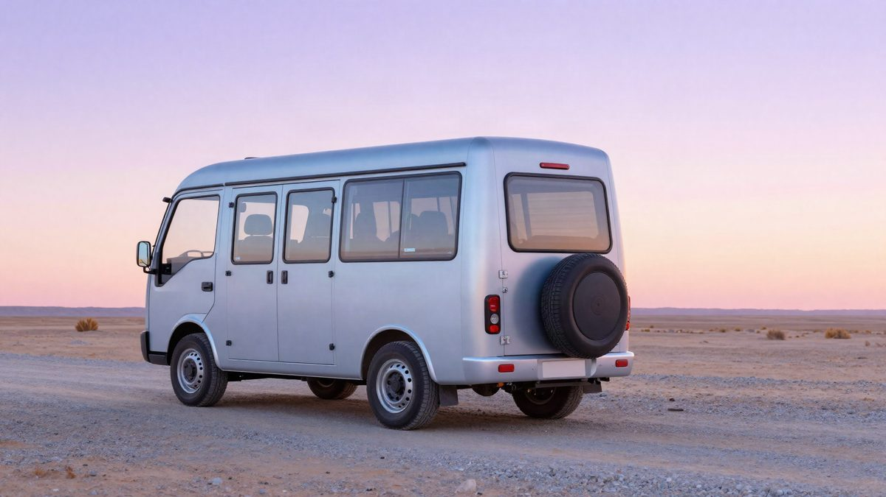

Hoffman EV pretvara rabljenu Teslu Model 3 u električni minibus Badger s 11 sjedala

Američki startup Hoffman EV predstavio je na sajmu SEMA električni minibus Badger s do 11 sjedala, izrađen od dijelova rabljene Tesle Model 3 ili Model Y. Navodno rade punjenje na Superchargerima te Autopilot i FSD. Prodaja počinje iduće godine, a procijenjena cijena kreće se od oko 22.000 do 66.000 eura.
Američki startup Hoffman EV iz Wisconsina predstavio je na ovogodišnjem SEMA sajmu električni minibus Badger. Vozilo prima do 11 putnika, a tehnički se temelji na rabljenoj Tesli Model 3 ili Model Y. Hoffman EV planira početi prodaju iduće godine, a procijenjena cijena kreće se od oko 22.000 do 66.000 eura.
Badger nije razvijen od nule. Hoffman EV iz donorskog vozila vadi elektromotor, bateriju, sjedala, volan, središnji zaslon, bežični punjač i ručke vrata, a zatim ih ugrađuje u vlastiti aluminijski okvir s novom karoserijom. Dizajn je kutan i podsjeća na Teslin Cybertruck.
Tesla softver i punjenje
Budući da ostaju originalni hardware i software, Badger navodno zadržava većinu Teslinih funkcija. Na sajmu su rekli da se vozilo može puniti na Teslinoj mreži Supercharger te da rade Autopilot i FSD. Prototip je iz Wisconsina odvezen do Las Vegasa, a na putu se punio na Superchargerima. Straga je ostao poznati Teslin priključak za punjenje, a u prednjem dijelu kabine vide se elementi dizajna Modela 3.
Modularna izvedba
Primjerak sa SEMA-e ima raspored minibusa s 11 sjedala. Vrata, krov i većina sjedala mogu se skinuti. Straga su spuštajuća vrata, rezervni kotač i kuka za prikolicu. Baterija je u odnosu na original podignuta za oko 4 cm, a razmak od tla iznosi oko 20 cm, pa vozilo bolje prolazi neasfaltiranim terenom.
Hoffman EV Badger ne vidi samo kao minibus. Na štandu su prikazane i druge varijante, među njima dostavni kombi, pickup s prostorom za prijevoz stoke, kamper s podiznim krovom, terenski shuttle, vozilo za čišćenje snijega i kabriolet. Moguće su i izvedbe za vuču čamaca ili prijevoz terenskih vozila.
Cijena i proizvodnja
Kupci mogu uzeti gotovo vozilo ili komplet s identifikacijskim brojem vozila (VIN), pa sami nabaviti Teslu Model 3 ili Model Y kao osnovu. Hoffman EV za sada računa na oko 100 vozila godišnje, a aerodinamiku planira dodatno doraditi početkom 2027.
Hoffman EV se i prije bavio preinakama, ponajviše pretvaranjem klasičnih automobila s motorima s unutarnjim izgaranjem u električne. S Badgerom se okreće ponovnom korištenju rabljenih električnih vozila.
Izvor: MyDrivers (快科技)